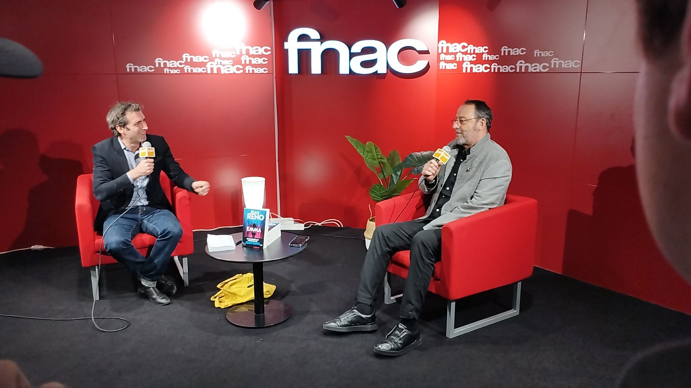
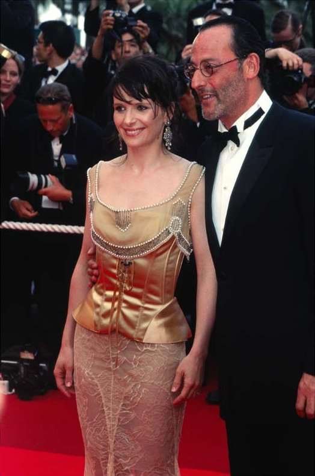
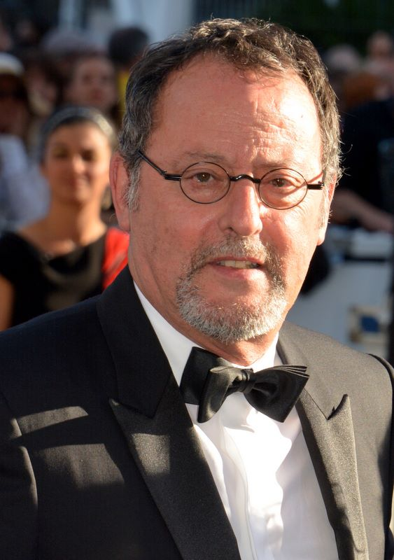
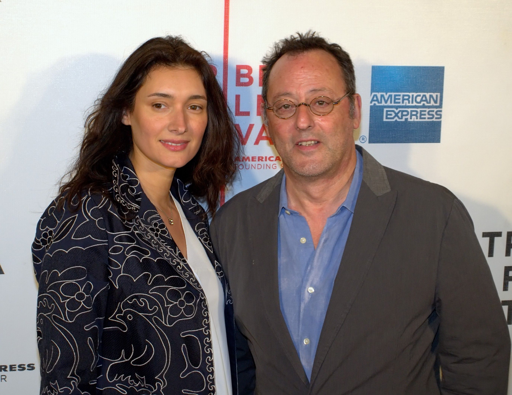

Jean Reno Biography: Age, Movies, Net Worth and Personal Life
He was born Juan Moreno in Casablanca, to Spanish parents who had fled Franco's Spain, and he became the most recognisable French actor of his generation without ever losing his Spanish roots. Jean Reno is the hitman Léon, the free diver Enzo in The Big Blue, the time-travelling count of Les Visiteurs and the traitor of Mission: Impossible — a three-time César nominee who never won one, the man who turned down Agent Smith in The Matrix, and, at 76, a published novelist. He is the fourth French celebrity on Stars of Europe, after Marion Cotillard, Omar Sy and Kylian Mbappé.

Key takeaways
- Born Juan Moreno y Herrera-Jiménez on 30 July 1948 in Casablanca, Morocco, to Spanish parents from Andalusia; age 78 as of November 2026.
- Luc Besson made him a star: The Big Blue (1988), La Femme Nikita (1990) and Léon: The Professional (1994).
- Hollywood followed: French Kiss, Mission: Impossible (1996), Godzilla and Ronin (both 1998), The Da Vinci Code (2006).
- Three César nominations — for The Big Blue, Les Visiteurs and Léon — and he has never won a César. He turned down the role of Agent Smith in The Matrix.
- Net worth is estimated at $60m–$80m. At 78 he is still working — and writing novels: Emma (2024) and L’Évasion (2026).
Who Is Jean Reno?
| Full name | Juan Moreno y Herrera-Jiménez |
|---|---|
| Date of birth | 30 July 1948 |
| Age | 78 (as of November 2026) |
| Birthplace | Casablanca, Morocco |
| Nationality | French and Spanish (dual citizen) |
| Height | 1.88 m (6 ft 2 in) |
| Profession | Actor, voice actor, novelist |
| Years active | 1977–present |
| Known for | Léon: The Professional, The Big Blue, Les Visiteurs, Mission: Impossible, Ronin, The Da Vinci Code |
| Spouse | Zofia Borucka (married 2006) |
| Children | 6 (two from each of three marriages) |
| Net worth | $60m–$80m (estimated range) |
Jean Reno is a French and Spanish actor whose career has lasted almost fifty years, in French, English, Italian, Spanish and Japanese productions. He established himself as a leading man of French cinema through his work with the director Luc Besson, and then became one of the few French actors Hollywood kept calling back — for spy films, thrillers, comedies and blockbusters alike. He is tall, quiet on screen, and instantly recognisable: a face that can play a hitman, a count, a policeman or a father without changing very much at all.
What makes him unusual is how little he fits the usual star story. He was not famous young. He spent his twenties and early thirties in small roles and theatre. His breakthrough came at 40, in The Big Blue. Léon made him world-famous at 46. And at 76 he started a second career as a novelist. Few actors have had three acts as different as his.
Age and Early Life — Casablanca to Paris
Juan Moreno y Herrera-Jiménez was born on 30 July 1948 in Casablanca, then in French Morocco. His parents were Spanish, from Sanlúcar de Barrameda and Jerez de la Frontera in Andalusia. They had moved to North Africa to find work and to escape Francoist Spain. His father was a linotypist — a typesetter for a printing press. He has a younger sister, María Teresa, known as Maite. His mother died when he was a teenager.
He grew up speaking Spanish at home with his parents and French outside it, in Morocco. At 17, he and his family moved to France, where he studied acting at the Cours Simon School of Drama in Paris. He also served in the French Army: military service became mandatory for him once his family had gained French citizenship. He is a dual citizen of France and Spain, and in a 2016 interview he said his roots are “above all Spanish, Andalusian”.
That double identity runs through his whole career. He is a French star who thinks of himself as Andalusian, an actor who works as easily in English and Italian as in French, and a man whose Spanish parents give this article a natural link to the Spanish section of the site — to Penélope Cruz, Javier Bardem and Antonio Banderas.
From Juan Moreno to Jean Reno
When he started getting acting work in France, Juan adopted the French version of his first name, Jean, and shortened his surname to Reno. It was a practical choice for a young actor in Paris — and it stuck for the rest of his life.
His size shaped his early career. At 1.88 m (6 ft 2 in), with a heavy build, he was called on to play “heavies” — thugs, heavies, menacing figures — in his first films. His film debut was in The Hypothesis of the Stolen Painting (1978), and through the early 1980s he took small parts: a table man in The Passerby (1982), the Brute in Besson’s Le Dernier Combat (1983), the Drummer in Subway (1985). He also worked on stage, in plays including Andromaque (1989) and Montserrat (1991). The romantic comedies and leading roles came later; first he had to be noticed, and Besson was the director who noticed him.
The Luc Besson Years
Jean Reno met Luc Besson in the early 1980s, and the partnership defined the first half of his career. Besson cast him in Le Dernier Combat (1983), a black-and-white post-apocalyptic film with almost no dialogue, and kept coming back to him. Of their work together, three films matter most.
The Big Blue (Le Grand Bleu, 1988) was the breakthrough. Reno played Enzo Molinari, a free diver and the rival and friend of Jacques Mayol, in a film about friendship and sporting rivalry between two of the great free divers of the twentieth century. Besson made his actors dive for real, under the supervision of a professional free diver. The film was a huge success in France, and it earned Reno his first César nomination, for Best Supporting Actor. He was 40 years old, and suddenly a leading man.
La Femme Nikita (1990) gave him one of his most memorable small roles: Victor, the Cleaner, a calm, methodical man sent to clean up after a failed assassination. He is on screen only briefly, but the character stayed with audiences — and with Besson. Four years later, Besson built a whole film around a version of him.


Léon: The Professional — The Role That Made Him Famous
Léon: The Professional (1994) is the film most people know Jean Reno for, and it is the one that made him famous around the world. He plays Leone “Léon” Montana, a lonely hitman in New York who takes in his twelve-year-old neighbour Mathilda, played by Natalie Portman in her film debut, after her family is murdered by a corrupt DEA agent played by Gary Oldman. Léon is illiterate, almost childlike in his habits — he drinks milk, tends a plant, follows the same routine every day — and completely professional at killing. The film works because Reno plays both sides of him without showing off: the tenderness is as quiet as the violence.
The film was Besson’s first in English, and it earned Reno his second César nomination for Best Actor. It also gave Portman her career, and it has never really gone away: thirty years on, it is still the film people quote first when Reno’s name comes up, and the one streaming services keep recommending. It was also, in a way, the end of the Besson chapter — after Léon, Hollywood came calling, and Reno spent the next decade working as much in English as in French.
Hollywood: Mission: Impossible, Ronin and Godzilla
Hollywood did not waste time. In French Kiss (1995) he played Inspector Jean-Paul Cardon opposite Meg Ryan and Kevin Kline. In Mission: Impossible (1996), Brian De Palma’s first film in the franchise, he played Franz Krieger, a member of Tom Cruise’s IMF team who turns traitor — one of the film’s two villains, and a role that put him in front of the biggest audience of his life. The film took about $457.7 million worldwide, according to the box-office figures quoted by ScreenDollars.
1998 brought two more American films in the same year: Godzilla, Roland Emmerich’s monster film, in which he played the French secret-service agent Philippe Roaché, and Ronin, John Frankenheimer’s thriller, in which he played Vincent, a former French intelligence operative working with Robert De Niro’s crew on a job in Paris and Nice. Ronin is now the more respected of the two — its car chases are still talked about — and Reno’s calm, professional Vincent is one of its best performances.
There is one Hollywood role he did not take, and it is almost as famous as the ones he did. Reno turned down the role of Agent Smith in The Matrix (1999). The part went to Hugo Weaving. Reno has never made a fuss about it, but it is a useful reminder of how in demand he was in the late 1990s: the Wachowskis wanted him for the defining villain of the decade, and he said no.
Hollywood kept coming back. He played Captain Bezu Fache, the French police captain hunting Tom Hanks’s Robert Langdon, in The Da Vinci Code (2006), Ron Howard’s adaptation of Dan Brown’s novel — another huge commercial success despite poor reviews. The same year he played Gilbert Ponton, Inspector Clouseau’s loyal partner, in the Pink Panther remake opposite Steve Martin, a role he repeated in the sequel in 2009.
French Box-Office Hits
For all the Hollywood work, Reno never left French cinema, and some of his biggest successes were in France. Les Visiteurs (1993) is the best example: he played Godefroy de Papincourt, Comte de Montmirail, a twelfth-century knight who is transported, with his servant, to the twentieth century. It is a broad, silly, hugely loved comedy, and it became one of the biggest French box-office hits of its time. It earned him another César nomination for Best Actor, and it spawned a sequel, Les Visiteurs II (1998), and a third film, Les Visiteurs: La Révolution (2016), with Reno still playing Godefroy more than twenty years later. An English-language remake, Just Visiting (2001), had him playing the same character in English.
The list of French hits goes on: The Crimson Rivers (Les Rivières pourpres, 2000), a dark thriller in which he played the detective Pierre Niemans; Wasabi (2001), an action comedy set in Japan; Jet Lag (Décalage horaire, 2002), a romantic comedy by Danièle Thompson that was also a box-office success in France; The Corsican File (2004); and Hector and the Search for Happiness (2014). He worked in Japanese, Spanish and Italian productions too, and in 2005 he appeared in the Italian film The Tiger and the Snow, directed by Roberto Benigni.
Voice Work — Mufasa and More
One of Reno’s most-heard performances is one most audiences never saw him give. He voiced Mufasa in the French-language version of The Lion King (1994) — the role performed in English by James Earl Jones — and returned to it for the 2019 remake. His deep voice, which made him so convincing as a hitman, works just as well for a lion king.
He has done a lot of voice work in French dubs: Marco Pagot in Porco Rosso (1992), Vinny Santorini in Atlantis: The Lost Empire (2001), Le Frog in Flushed Away (2006), and Bernie the gorilla in Zookeeper (2011). He also lent his likeness and his voice to the video game Onimusha 3: Demon Siege (2004), playing the protagonist Jacques Blanc, and appeared in American television commercials for UPS and as Doraemon in a series of Toyota advertisements in Japan.
Awards — Three César Nominations, No Win
Jean Reno has been nominated for three César Awards — the French equivalent of the Oscars — and he has never won one. The nominations were: Best Supporting Actor for The Big Blue (1989), Best Actor for Les Visiteurs (1994), and Best Actor for Léon: The Professional (1995). It is one of the stranger gaps in French cinema: an actor with his filmography, his box-office record and his longevity, without a César on his shelf.
He has been honoured in other ways. In 2000 he received the European Film Award for Outstanding European Achievement in World Cinema, and in 2012 the François Truffaut Award at the Giffoni Film Festival. In 2021 he was nominated, with the cast of Da 5 Bloods, for a Screen Actors Guild Award for Outstanding Performance by a Cast in a Motion Picture. And France and Spain have both decorated him: Officer of the National Order of Merit (2003), Officer of the Order of Arts and Letters (2007), the Gold Medal of Merit in the Fine Arts from Spain (2015), and Commander of the Legion of Honour (2024) — France’s highest honour.


Recent Work and the Novels
Reno has never really stopped. In 2020 he played Desroche in Spike Lee’s Da 5 Bloods, a Vietnam veteran story that earned the cast a Screen Actors Guild nomination. On television he played the detective Jo St-Clair in the English-language series Jo (2013), appeared in the Netflix series Who Killed Sara? (2021) and A Private Affair (2022), and in 2024 he was in three films: the Netflix action film Lift, My Penguin Friend and the French comedy Family Pack. His next film, The Florist, with Dennis Quaid, was in post-production in 2025.
And then there is the writing. In 2024, at 76, Reno released his first novel, Emma — the book he was signing at the Fnac de Ternes in Paris in the photograph at the top of this article. In 2026 he published a sequel, L’Évasion, inspired by the abductions of Ukrainian children during the Russo-Ukrainian war; he has stressed that the story, although based on real events, is apolitical. It is an unexpected second act, and a very Reno one: quiet, serious, and entirely on his own terms.
Net Worth 2026
Jean Reno’s net worth is estimated at $60 million–$80 million. That is a range, not a single figure, and it is an estimate. Several celebrity-finance trackers converge on a figure of about $70 million, but those sites copy each other, publish no audited accounts, and disagree on the details — one French site puts his fortune at €86 million — so no exact number is given here. The range reflects a career of almost fifty years, more than a hundred film and television credits, and steady work in both French and Hollywood films. His Top 10 Richest position will be confirmed from the live page after this article is uploaded, because the range would place him near the top of the list.
Personal Life
Reno has been married three times, and has six children — two from each marriage. He married his first wife, Geneviève, in 1977. They had a daughter, Sandra (born 1978), and a son, Mickael (born 1980), and the marriage ended in divorce. He married his second wife, the Polish model Nathalie Dyszkiewicz. They had a son, Tom (born 10 January 1996), and a daughter, Serena (born 28 June 1998), and divorced in 2001.
On 29 July 2006 — the day before his 58th birthday — he married for the third time, to Zofia Borucka, a British model and actress of Polish descent, at the city hall in Les Baux-de-Provence. The presidential candidate Nicolas Sarkozy served as his best man. They have two sons: Cielo, born in July 2009 in New York City, and Dean, born in September 2011. Reno maintains three homes, in Paris, Malaysia and Los Angeles.


He keeps his private life mostly private. What he does talk about is his roots: in interviews he returns to his Spanish parents, his Andalusian background and the move from Casablanca to Paris at 17, the journey that made him who he is — a French actor who has never forgotten he started life as Juan Moreno.
Filmography Highlights
| Year | Film | Role |
|---|---|---|
| 1983 | Le Dernier Combat | The Brute |
| 1988 | The Big Blue | Enzo Molinari |
| 1990 | La Femme Nikita | Victor, the Cleaner |
| 1993 | Les Visiteurs | Count Godefroy de Montmirail |
| 1994 | Léon: The Professional | Léon Montana |
| 1994 | The Lion King (French dub) | Mufasa (voice) |
| 1995 | French Kiss | Inspector Jean-Paul Cardon |
| 1996 | Mission: Impossible | Franz Krieger |
| 1998 | Godzilla | Philippe Roaché |
| 1998 | Ronin | Vincent |
| 2000 | The Crimson Rivers | Pierre Niemans |
| 2001 | Wasabi | Hubert Fiorentini |
| 2006 | The Pink Panther | Gilbert Ponton |
| 2006 | The Da Vinci Code | Captain Bezu Fache |
| 2014 | Hector and the Search for Happiness | Dr. Diego Baresco |
| 2020 | Da 5 Bloods | Desroche |
| 2024 | Lift | Lars Jorgensen |
FAQs
How old is Jean Reno?
Jean Reno was born on 30 July 1948 in Casablanca, Morocco. He is 78 years old as of November 2026. Several biography blogs wrongly say 77 — his birthday in July 2026 has already passed, so 78 is correct.
What is Jean Reno's real name?
His full birth name is Juan Moreno y Herrera-Jiménez. He adopted the French version of his first name, Jean, and shortened his surname to Reno when he began acting in France.
What is Jean Reno most famous for?
Léon: The Professional (1994), in which he played the hitman Léon Montana opposite Natalie Portman in her film debut. The Big Blue (1988) made him a star in France, and Les Visiteurs (1993) is one of France’s biggest comedy hits.
Did Jean Reno ever win a César Award?
No. He has been nominated three times — Best Supporting Actor for The Big Blue (1989) and Best Actor for Les Visiteurs (1994) and Léon (1995) — and has never won. He has won the European Film Award for Outstanding European Achievement in World Cinema (2000) and was made Commander of the Legion of Honour in 2024.
Did Jean Reno turn down The Matrix?
Yes. He turned down the role of Agent Smith in The Matrix (1999). The role went to Hugo Weaving.
Who is Jean Reno married to?
He has been married since 29 July 2006 to Zofia Borucka, a British model and actress of Polish descent. It is his third marriage. He has six children, two from each marriage: Sandra and Mickael, Tom and Serena, and Cielo and Dean.
What is Jean Reno's net worth?
His net worth is estimated at $60 million–$80 million, based on the range published by celebrity-finance trackers, which converge on about $70 million. No audited figure exists, so no single number is given.
Is Jean Reno still acting?
Yes. In 2024 he appeared in Lift, My Penguin Friend and Family Pack, and his next film, The Florist, was in post-production in 2025. He is also a novelist now: Emma (2024) and L’Évasion (2026).
What was Jean Reno's first film?
The Hypothesis of the Stolen Painting (1978). His breakthrough came ten years later, in Luc Besson’s The Big Blue (1988).
Sources
Facts in this article were checked against: Wikipedia — Jean Reno (birth name/date/place, age 78, Spanish parents from Andalusia, father a linotypist, younger sister, mother’s death, move to France at 17, Cours Simon, French Army service, dual citizenship, name change, height 1.88 m, filmography, Besson collaborations, Mufasa French voice, Hollywood films, Agent Smith refusal, Les Visiteurs, Crimson Rivers, Jet Lag, Pink Panther, Da Vinci Code, Onimusha 3, novels Emma 2024 and L’Évasion 2026, three César nominations, European Film Award 2000, Giffoni 2012, SAG nomination 2021, honours to 2024, three marriages and six children, Zofia Borucka wedding 29 July 2006, Sarkozy as best man, homes in Paris, Malaysia and Los Angeles, years active 1977–present); ScreenDollars (Mission: Impossible $457.7m worldwide; César nominations 1989, 1994, 1995); Wikimedia Commons (hero photo: “Jean Reno 2024 1.jpg”, ManoSolo13241324, CC0 1.0; Zofia Borucka photo: “Zofia Borucka Jean Reno Shankbone 2010 NYC.jpg”, David Shankbone, CC BY 3.0; Binoche photo: “Juliette Binoche and Jean Reno.jpg”, CC BY-SA 2.5; Cannes 2016 photo: “Jean Reno Cannes 2016.jpg”, Georges Biard, CC BY-SA 3.0). All writing is original to Stars of Europe. No thin biography blogs were used as sources; net-worth tracker figures are used only for the range above.